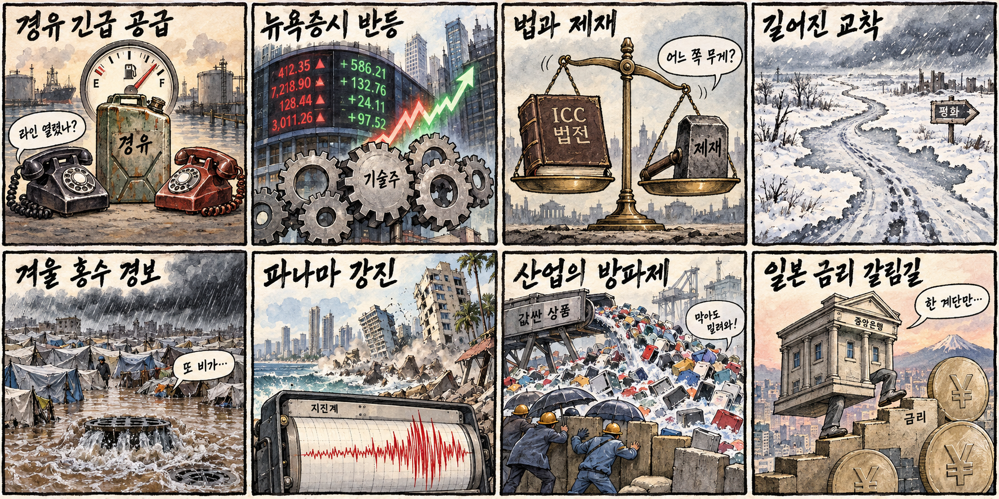
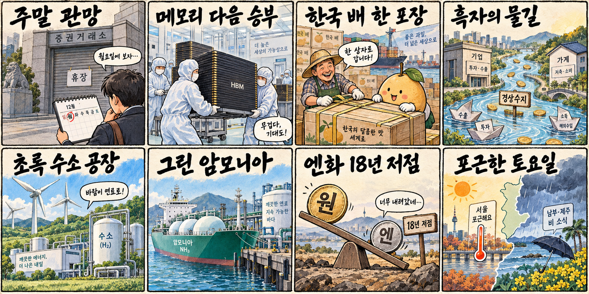

01
팔란티어 · 201.06→209.05달러 · +3.97%
내용요약 시가 대비 +3.97%로 조사 종목 중 가장 강한 반등을 보였습니다.
예상여파 소프트웨어 위험선호 회복에는 우호적이나 높은 변동성과 밸류에이션 부담을 함께 봐야 합니다.
MORNING_BRIEFING_20261010
작성 시각: 2026-10-10 06:37 KST · 직전 미국 정규장과 2026-10-10 KST 당일 공개 기사 기준
직전 미국 정규장인 10월 9일 뉴욕증시는 다우 +0.83%, S&P 500 +0.59%, 나스닥 +0.64%로 반등했습니다. 실적 시즌 기대와 오픈AI 매출 우려 완화가 기술주 심리를 지지했지만 인공지능 반도체는 상대적으로 약했습니다. 한국 증시는 토요일 휴장으로 즉시 반영되지 않으며 다음 개장일에는 휴장 중 누적된 미국 기술주, 반도체와 유가·환율 흐름을 함께 확인해야 합니다.
| 지수 | 종가 | 등락률 | 한국 증시 시사점 |
|---|---|---|---|
| 다우존스 | 51,654.95 | +0.83% | 실적 기대의 위험선호 회복은 다음 개장일 심리에 긍정적 |
| S&P 500 | 7,811.54 | +0.59% | 실적 기대의 위험선호 회복은 다음 개장일 심리에 긍정적 |
| 나스닥 종합 | 27,366.17 | +0.64% | 기술주 반등은 국내 성장주 심리에 우호적이나 AI 반도체 약세는 선별 부담 |
다우 +0.83%, S&P 500 +0.59%, 나스닥 +0.64%로 마감했습니다.
아마존·오라클·보안주는 강했고 인공지능 반도체는 약했습니다.
당일 진입 검증이 불가능해 공식 추천 없이 현금 관망합니다.
러시아산 경유 긴급 공급 합의가 유가와 운송비의 새 변수입니다.
10월 9일 보고서는 한글날 국내 증시 휴장으로 공식 추천을 내지 않았습니다. 게시 당시 판단을 유지하며 사후 종목을 추가하지 않습니다.
| 시장 | 종가 | 등락률 | 기준 |
|---|---|---|---|
| KOSPI | 6,625.93 | -2.62% | 최근 거래일 10월 8일 · 시가 대비 -2.68% |
| KOSDAQ | 892.27 | -0.69% | 최근 거래일 10월 8일 · 시가 대비 -0.66% |
| 다우존스 | 51,654.95 | +0.83% | 미국 10월 9일 정규장 |
| S&P 500 | 7,811.54 | +0.59% | 미국 10월 9일 정규장 |
| 나스닥 종합 | 27,366.17 | +0.64% | 미국 10월 9일 정규장 |
팔란티어는 시가 대비 +3.97%, 오라클은 +3.44%로 반등했습니다.
크라우드스트라이크 +2.63%, 아마존 +2.39%로 기술주 반등을 이끌었습니다.
슈퍼마이크로 -3.49%, 인텔 -3.40%, AMD -2.79%로 약했습니다.
마이크론 -2.23%, 어플라이드머티리얼즈 -2.19%, 엔비디아 -1.96%였습니다.
내용요약 시가 대비 +3.97%로 조사 종목 중 가장 강한 반등을 보였습니다.
예상여파 소프트웨어 위험선호 회복에는 우호적이나 높은 변동성과 밸류에이션 부담을 함께 봐야 합니다.
내용요약 시가 대비 +3.44%로 전날 급락 뒤 반등했습니다.
예상여파 인공지능 투자 수익성 우려가 완화되는 신호지만 하루 반등만으로 추세 전환을 단정하기 어렵습니다.
내용요약 시가 대비 -3.49%로 서버·인공지능 하드웨어 약세가 이어졌습니다.
예상여파 국내 서버 부품주 투자심리에 부담이 될 수 있어 수주와 마진 확인이 중요합니다.
내용요약 시가 대비 -3.40%로 조사한 반도체 종목 중 큰 폭으로 하락했습니다.
예상여파 미국 반도체 반등이 업종 전반으로 확산되지 않았음을 보여줘 국내 종목별 선별이 필요합니다.
내용요약 시가 대비 -2.79%로 인공지능 반도체 약세 흐름을 보였습니다.
예상여파 국내 HBM·패키징 기대에도 단기 심리 부담이 될 수 있으며 실제 고객 주문과 제품 경쟁력을 봐야 합니다.
토요일 국내 증시는 휴장입니다. 미국 3대 지수 반등은 다음 개장일 위험선호에 우호적이지만 엔비디아·AMD·마이크론 등 인공지능 반도체의 상대 약세는 국내 대형 반도체의 추격 매수에 경계 요인입니다. 러시아산 경유 공급 합의가 유가를 진정시키는지, 일본 금리 기대가 원·엔 환율을 흔드는지도 월요일 개장 전 재확인해야 합니다.
오늘은 추천 없음 — 현금 관망
토요일 국내 증시 휴장으로 당일 시가 진입, 호가 유동성 및 장중 수급을 검증할 수 없습니다. 종합점수 75점·상승확률 60%·예상 손익비 1.5를 동시에 검증할 수 없어 공식 후보를 제시하지 않습니다.
관심 연결종목 메모리·클라우드·전력 인프라는 다음 개장일 관찰 대상일 뿐 매수 추천이 아닙니다. 휴장 중 누적 뉴스로 예상 갭이 커질 수 있으므로 추격매수하지 않습니다.
월요일 시가 갭과 외국인 선물 방향을 개장 전에 다시 확인합니다.
지수 반등이 기업 실적과 전망으로 이어지는지 봅니다.
소프트웨어 강세와 인공지능 반도체 약세가 좁혀지는지 확인합니다.
경유 공급 합의와 일본 금리 기대의 가격 반영을 점검합니다.
핵심 요약: 인공지능 투자는 클라우드·메모리·전문 기반모델에서 계속 확대되는 한편 안전 연구원 해고 논란과 보안 수요가 거버넌스의 중요성을 키웠습니다. 미국 증시에서는 소프트웨어가 반등했지만 반도체는 약해 기대와 실적을 분리해 볼 필요가 있습니다.
내용요약 창립 43주년을 맞은 SK하이닉스가 HBM 이후의 차세대 인공지능 메모리 기술과 시장 전략을 준비한다는 당일 보도입니다. 메모리 경쟁이 대역폭뿐 아니라 전력효율과 패키징으로 넓어지고 있습니다.
예상여파 국내 메모리 생태계의 중장기 수요에는 우호적이지만 고객 인증, 양산 수율과 실제 계약이 주가 기대를 충족하는지 확인해야 합니다.
내용요약 아마존웹서비스 최고경영자가 인공지능 거품 우려보다 장기 수요를 강조하며 투자 확대 의지를 밝혔다는 당일 보도입니다.
예상여파 클라우드·데이터센터·전력 인프라 수요를 지지할 수 있으나 자본지출 증가가 매출과 이익으로 전환되는 속도를 함께 봐야 합니다.
내용요약 설립 7개월, 5명 규모의 국내 스타트업이 구글의 시계열 기반모델보다 나은 성과를 내세워 첫 투자 40억원을 유치했다는 당일 보도입니다.
예상여파 국내 기반모델 기술의 전문화 가능성을 보여주지만 제한된 벤치마크 결과와 실제 고객 적용 성과는 구분해 평가해야 합니다.
내용요약 오픈AI가 보안 규정 위반을 이유로 안전 연구원 3명을 해고했고 내부에서는 안전 문제 제기에 대한 보복 논란이 제기됐다는 당일 보도입니다.
예상여파 첨단 인공지능 기업의 내부통제·보안·이견 처리 방식이 규제와 신뢰에 직접 영향을 줄 수 있어 후속 사실관계가 중요합니다.
내용요약 국내 기업이 인공지능 기반 보안 솔루션 AEGIS 5000을 공개했다는 당일 보도입니다. 인공지능 활용 확대와 함께 자동화된 위협 탐지 수요도 커지고 있습니다.
예상여파 보안 투자는 구조적으로 늘 수 있지만 탐지 정확도, 오탐률, 고객 도입과 반복 매출이 제품 경쟁력을 가를 전망입니다.
핵심 요약: 러시아산 경유 긴급 공급은 에너지 가격을 낮추려는 시도지만 제재와 국제 사법 갈등은 계속됐습니다. 가자의 겨울 홍수 위험, 파나마 강진과 일본 금리 가능성은 인도주의·재난·금융 변수를 동시에 부각했습니다.
내용요약 미국 대통령이 러시아와 대규모 경유 공급에 합의해 에너지 제재를 한시적으로 완화한다는 당일 보도입니다. 공급 불안을 낮추려는 긴급 조치 성격입니다.
예상여파 경유·운송비 상승 압력을 완화할 수 있지만 제재 예외의 범위와 실제 선적 속도에 따라 유가 효과가 달라질 수 있습니다.
내용요약 미국이 국제형사재판소를 추가 제재하자 재판소가 국제 법질서에 대한 공격이라고 반발했다는 당일 보도입니다.
예상여파 동맹국의 협조 여부에 따라 국제 사법 공조와 외교 갈등이 확대될 수 있어 유럽의 대응을 지켜봐야 합니다.
내용요약 유엔이 올겨울 가자지구의 심각한 홍수 위험을 경고했다는 당일 보도입니다. 손상된 배수시설과 임시 거주지가 인도주의 피해를 키울 수 있습니다.
예상여파 구호 물자와 기반시설 복구 필요가 커지며 휴전·구호 접근 협상에도 추가 압력이 될 수 있습니다.
내용요약 파나마 남서부에서 규모 7.6의 강진이 발생해 수도의 건물에서도 흔들림이 감지됐다는 당일 속보입니다.
예상여파 인명·시설 피해와 항만·운하 운영 영향은 공식 점검 결과에 따라 달라질 수 있어 후속 발표가 중요합니다.
내용요약 일본은행이 이달 추가 금리 인상에 나설 가능성을 다룬 당일 보도입니다. 엔화와 물가, 임금 흐름이 판단 변수로 거론됩니다.
예상여파 금리 인상 기대는 엔화와 아시아 채권·환율 변동성을 키울 수 있으며 원·엔 환율과 한국 수출주의 가격 경쟁에도 영향을 줄 수 있습니다.

핵심 요약: 경상수지 흑자와 농산물 수출 브랜드 정비가 대외 부문을 지지했고 재생에너지 연계 수소·그린암모니아 계약은 청정에너지 공급망의 구체화를 보여줬습니다. 연휴 둘째 날은 중부가 포근하지만 남부와 제주는 비에 유의해야 합니다.
내용요약 한국의 경상수지가 461억달러 흑자를 기록한 가운데 기업 자금 축적과 가계의 주식·펀드 이동이 함께 나타났다는 당일 보도입니다.
예상여파 대외건전성과 원화에는 우호적일 수 있으나 기업 투자와 가계 소비로 이어지는지를 별도로 확인해야 합니다.
내용요약 농협이 한국산 배 수출 포장을 통일해 해외 시장에서 브랜드 인지와 품질 신뢰를 높이겠다는 당일 보도입니다.
예상여파 농산물 수출 경쟁력 개선에 도움이 될 수 있으나 현지 유통망, 검역과 가격 경쟁력이 실제 판매 확대를 좌우합니다.
내용요약 현대엔지니어링이 재생에너지와 연계한 수전해 플랜트 개발을 추진한다는 당일 보도입니다. 전력의 변동성을 고려한 청정수소 생산이 핵심입니다.
예상여파 전해조·전력제어·플랜트 수요에는 긍정적이지만 전력단가와 장기 구매계약이 사업성을 결정할 전망입니다.
내용요약 GS건설 합작사가 롯데정밀화학과 그린암모니아 공급계약을 맺었다는 당일 보도입니다. 청정연료 공급망의 상업 계약이 구체화되는 흐름입니다.
예상여파 암모니아 운송·저장과 발전·산업 연료 전환 시장을 넓힐 수 있으나 공급량, 인증과 가격 조건을 확인해야 합니다.
내용요약 연휴 둘째 날 서울 낮 26도, 대구 28도까지 오르는 가운데 남부와 제주에는 비가 예보됐다는 당일 기사입니다.
예상여파 중부권 나들이 수요에는 우호적이지만 큰 일교차와 남부·제주 빗길, 강풍 가능성에 대비해야 합니다.
